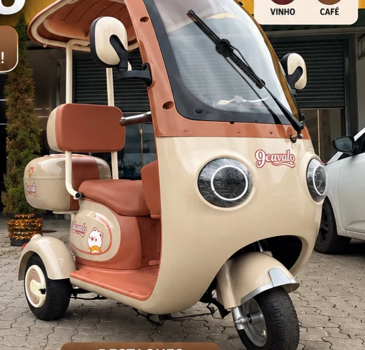

BIKE ELÉTRICA · REFERÊNCIA EXTERNA
Caloi E-Vibe Rush
Uma e-bike urbana de referência, com motor de 250 W e autonomia publicada de até 25 km por bateria.
Ver ficha oficial da CaloiWM ELÉTRICA · SUA PRÓXIMA ROTA
Explore bicicletas, scooters, patinetes e triciclos apresentados no catálogo da Walk Machine. Compare opções e fale com a equipe sobre o modelo que chamou sua atenção.
Preços e produtos são os que aparecem no PDF recebido e precisam ser confirmados com a loja.

ENCONTRE SEU TIPO DE ROTA
Comece pela categoria e descubra os modelos apresentados no material.
CATÁLOGO RECEBIDO DA LOJA
Encontre um modelo, abra os detalhes e chame a equipe já sabendo o que quer perguntar.
EXEMPLOS DE MERCADO · FORA DO CATÁLOGO WM
Estas referências ajudam a mostrar possibilidades do segmento. Não indicam venda, parceria ou disponibilidade na Walk Machine.
Uma e-bike urbana de referência, com motor de 250 W e autonomia publicada de até 25 km por bateria.
Ver ficha oficial da CaloiUm exemplo de triciclo elétrico com bateria removível de 60 V e 20 Ah; o fabricante informa autonomia estimada de até 40 km.
Ver ficha oficial da ShinerayACHOU UM MODELO?
Chame a equipe indicando o modelo. Assim fica fácil perguntar sobre versão, preço e disponibilidade atual.
Falar com a Walk MachineSUA LISTA
A seleção apenas prepara uma mensagem. Nada é enviado sem você abrir o WhatsApp e tocar em enviar.